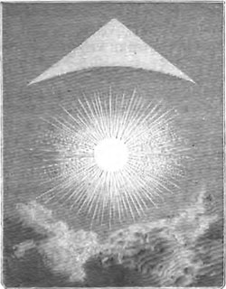

Au-dessus du village de Biskophsberga (Bischofsberg/Bischofsburg en Autriche?),
observation de très nombreuses boules sombres avec des traînées Acharius, E.: Signalement à la North American Review, 3:320-322, 1816. Signalement du même auteur à l'Académie Royale.
Septembre
Figure 11 illustrant l'observation de Festieux en septembre

Près de Festieux (à 2 lieues de Laon, France), Remy Armand Coulvier-Gravier et les habitants de
ce pays regardent le lever du soleil lorsqu'il trouvent qu'au lieu d'une colonne un phénomène représente
tout à fait un tricorne ; aussi ne manquent-ils pas de dire dans leur simplicité : "Vous voyez bien que
Napoléon reviendra puisque le soleil nous montre son chapeauCoulvier-Gravier, Remy Armand: Recherches sur les météores et sur les lois qui les régissent, Paris, 1859, p. 50 < Flammarion, C.: l'Atmosphère, description des grands phénomènes de la nature, Paris, 1872, p. 225 < Deliyannis, Y.: "1816, september : Festieux (France)", Magonia Exchange, 22 mars 2008.